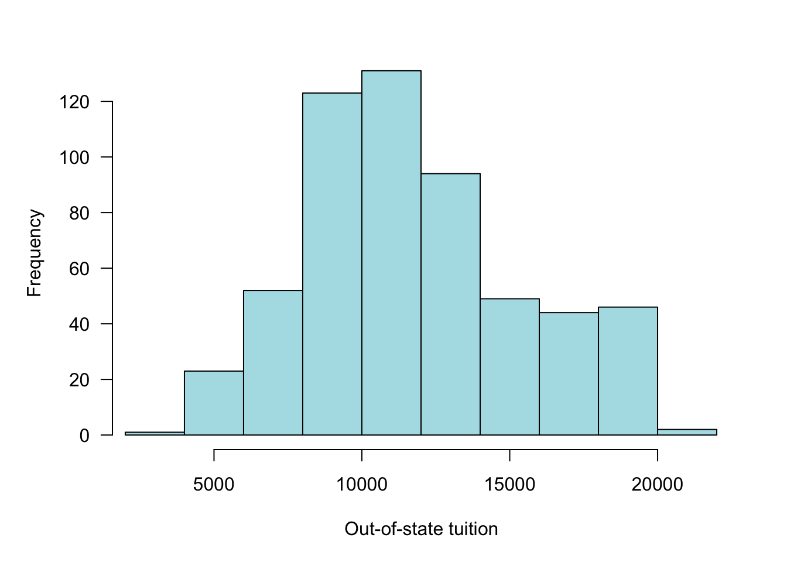
33 Statistics
33.1 Introduction
Statistics is the science of uncertainty. The name of the discipline hails from the German word “Statistik”, a quantity describing a state or country. Statistics deals with the collection of data, the generation of data through experiments, the analysis of data and the drawing of conclusions from data.
Here is a strange statement: statistics is concerned with statistics. Seems kind of obvious, but there is a trick. The first “statistic” in this sentence refers to the discipline, the second to a quantity computed from data. The sample mean or the sample standard deviation are statistics, as are the coefficients of a regression model. Because data are inherently uncertain, either because they have been sampled from a population, are measured with error, represent naturally variable phenomena, or are the result of randomized manipulation, statistics computed from data are random variables. And variability is contagious. The distributional properties of the data impart a certain random behavior on the quantities calculated from statistics.
Statisticians thus worry a great deal about which statistical quantities are best to be used in different situations. What are their properties based on a sample of size \(n\) and how do their properties change as the sample size increases? How do stochastic properties of the population being sampled transfer into properties of a statistic?
Parameters & Statistics
Unknown quantities that describe the population we are interested in are called parameters. We sample elements of the population to collect data based on which we can compute statistics that estimate the paraemters (Figure 33.1).
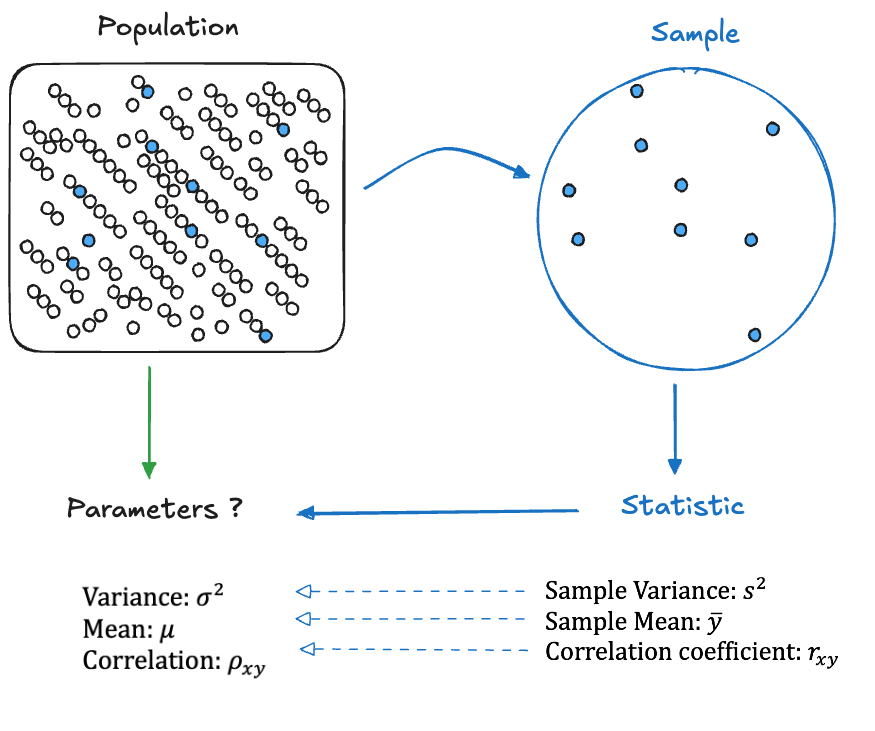
The statistics are random variables because the attribute sampled from the population is not constant, it has variability. Depending on which elements of the population make it into the sample, the values of the statistics will differ. The only ways around the variability in statistics would be to either
- observe (measure) all elements of the population, a procedure known as a census
- observe an attribute that does not vary in the population (\(\text{Var}[Y] = 0\)).
In the first case there is no variability in the statistics because every repetition of the census yields the exact same data. In the second case there is no variability in the statistics because there is no variability in the values we observe. In situation 2 we might as well just sample a single observation and we know everything there is to know about the attribute in question.
Random Variables & Realizations
When discussing statistics, the quantities computed from data, we must make a distinction between random quantities and their realizations. For example, suppose you draw \(n\) observations from a Gaussian distribution with mean \(\mu\) and variance \(\sigma^2\). This is the same as saying that there is a population where attribute \(Y\) follows a \(G(\mu, \sigma^2)\) distribution and we are pulling a random sample of \(n\) elements of the population.
What is the difference between the following quantities, \[ \begin{align*} \overline{Y} &= \frac{1}{n} \sum_{i=1}^n Y_i \\ \overline{y} &= \frac{1}{n} \sum_{i=1}^n y_i \end{align*} \]
The distributional properties of \(Y\) in the population can be expressed as \(Y \sim G(\mu,\sigma^2)\). \(Y_1\) is the first random variable in our sample. \(y_1\) is the value we observe on the first draw, for example, \(y_1 = 5.6\).
When we refer to the random variables, we use upper-case notation, when we refer to their realized (observed) values in a particular set of data we use lower-case notation. Both \(\overline{Y}\) and \(\overline{y}\) refer to the sample mean. \(\overline{Y}\) is a random variable, \(\overline{y}\) is the actual value of the sample mean in our data, it is a constant. \(\overline{Y}\) has an expected value (the mean of the sample mean) and a variance that are functions of the mean and variance of the population from which the sample is drawn,
\[ \begin{align*} \text{E}\left[ \overline{Y}\right] &= \mu \\ \text{Var} \left[\overline{Y}\right] &= \frac{\sigma^2}{n} \end{align*} \]
The variance of \(\overline{y}\) is zero, and its expected value is equal to the value we obtained for \(\overline{y}\), because it is a constant:
$$ \[\begin{align*} \text{E}\left[ \overline{y}\right] &= \overline{y} \\ \text{Var} \left[\overline{y}\right] &= 0 \end{align*}\] $$
It should always be clear from context whether we are talking about the random properties of a statistic or its realized value. Unfortunately, notation is not always clear. In statistical models, for example, it is common to use Greek letters for parameters. These are unknown constants. Based on data we find estimators for the parameters. For example, in the simple linear regression model \[ Y_i = \beta_0 + \beta_1 x_i + \epsilon_i \] \(\beta_0\) and \(\beta_1\) are the intercept and slope parameters of the model. The ordinary least squares estimator of \(\beta_1\) is \[ \widehat{\beta}_1 = \frac{S_{xY}}{S_{xx}} = \frac{\sum_{i=1}^n (x_i - \overline{x})(Y_i - \overline{Y})}{\sum_{i=1}^n(x_i - \overline{x})^2} \tag{33.1}\]
The input variable is considered fixed in regression models, not a random variable. That is why we use lower-case notation for \(x_i\) and \(\overline{x}\) in Equation 33.1. With respect to the target variable we have two choices. Equation 33.1 uses upper-case notation, referring to the random variables. \(\widehat{\beta}_1\) in Equation 33.1 is a random variable and we can study the distributional properties of \(\widehat{\beta}_1\).
The expression for \(\widehat{\beta}_1\) in Equation 33.2 uses lower-case notation for \(y_i\) and \(\overline{y}\), it is referring to the constants computed from a particular sample.
\[ \widehat{\beta}_1 = \frac{S_{xy}}{S_{xx}} = \frac{\sum_{i=1}^n (x_i - \overline{x})(y_i - \overline{y})}{\sum_{i=1}^n(x_i - \overline{x})^2} \tag{33.2}\]
The quantity \(\widehat{\beta}_1\) in Equation 33.2 is the realized value of the regression slope, for example, 12.456. Unfortunately, the notation \(\widehat{\beta}_1\) does not tell us whether we are referring to the estimator of the slope—a random variable—or the estimate of the slope—a constant.
Two primary lines of inquiry in statistics are the description of data—through quantitative and visual summaries—and the drawing of conclusions from data. These lines of inquiry are called descriptive and inferential statistics. Descriptive statistics—the discipline—describes the features of a population (a distribution) based on the data in a sample. Inferential statistics—the discipline—draws conclusions about one or more populations.
Both lines of inquiry rely on statistics, quantities computed from data. The distinction lies in how the statistics are used. Descriptive statistics uses the sample mean to estimate the central tendency—the typical value—of a population. Inferential statistics uses the sample means in two groups to make conclude whether the means of the populations are different.
33.2 Descriptive Statistics
Descriptive statistics capture the feature of a distribution (a population) in numerical or graphical summaries. The most important features of a distribution are its central tendency (location) and its variability (dispersion). The central tendency captures where the typical values are located, the dispersion expresses how much the distribution spreads around the typical values.
Numerical Summaries
Table 33.1 shows important location statistics and Table 33.2 important dispersion statistics.
| Sample Statistic | Symbol | Computation | Notes |
|---|---|---|---|
| Min | \(Y_{(1)}\) | The smallest non-missing value | |
| Max | \(Y_{(n)}\) | The largest value | |
| Mean | \(\overline{Y}\) | \(\frac{1}{n}\sum_{i=1}^n Y_i\) | Most important location measure, but can be affected by outliers |
| Median | Med | \(\left \{ \begin{array}{cc} Y_{\left(\frac{n+1}{2}\right)} & n \text{ is even} \\ \frac{1}{2} \left( Y_{\left(\frac{n}{2} \right)} + Y_{\left(\frac{n}{2}+1\right)} \right) & n\text{ is odd} \end{array}\right .\) | Half of the observations are smaller than the median; robust against outliers |
| Mode | Mode | The most frequent value; not useful when real numbers are unique | |
| 1st Quartile | \(Q_1\) | \(Y_{\left(\frac{1}{4}(n+1) \right)}\) | 25% of the observations are smaller than \(Q_1\) |
| 2nd Quartile | \(Q_2\) = Med | See Median | 50% of the observations are smaller than \(Q_2\). This is the median |
| 3rd Quartile | \(Q_3\) | \(Y_{\left(\frac{3}{4}(n+1) \right)}\) | 75% of the observations are smaller than \(Q_3\) |
| X% Percentile | \(Y_{\left(\frac{X}{100}(n+1) \right)}\) | For example, 5% of the observations are larger than \(P_{95}\), the 95% percentile |
The most important location measures are the sample mean \(\overline{Y}\) and the median. The sample mean is the arithmetic average of the sample values. Because the sample mean can be affected by outliers—large values are pulling the sample mean up—the median is preferred in the presence of extreme observations. For example, when reporting central tendency of annual income, the median income is chosen over the arithmetic average so that extreme incomes like those of Elon Musk, Jeff Bezos, and Mark Zuckerberg do not distort the notion of the typical value.
| Sample Statistic | Symbol | Computation | Notes |
|---|---|---|---|
| Range | \(R\) | \(Y_{(n)} - Y_{(1)\) | \(n\)th order statistic (largest) minus first (smallest) order statistic |
| Inter-quartile Range | IQR | \(Q_3 - Q_1\) | Used in constructing box plots; covers the central 50% of the data |
| Standard Deviation | \(S\) | \(\sqrt{\frac{1}{n-1}\sum_{i=1}^n\left( Y_i - \overline{Y}\right)^2}\) | Most important dispersion measure; in the same units as the sample mean (the units of \(Y\)) |
| Variance | \(S^2\) | \(\frac{1}{n-1}\sum_{i=1}^n \left( Y_i - \overline{Y} \right)^2\) | Important statistical measure of dispersion; in squared units of \(Y\) |
| Skewness | \(g_1\) | \(\frac{\frac{1}{n}\sum_{i=1}^n(Y_i - \overline{Y})^3}{S^3}\) | Measures the symmetry of a distribution |
| Kurtosis | \(k\) | \(\frac{\frac{1}{n}\sum_{i=1}^n(Y_i - \overline{Y})^4}{S^4}\) | Measures the peakedness of a distribution |
Graphical Summaries
We view a population as a distribution of values. Data visualizations thus lend themselves to the description of populations. The more important visual descriptive summaries are the frequency distribution (histogram) and the boxplot.
Histogram (Frequency Distribution)
The frequency distribution is constructed by binning the observed values into segments of equal width. Figure 33.2 shows the (absolute) frequency distribution of out-of-state tuition for private universities in 1995. Figure 33.3 displays the same data with a large number of frequency bins (30). Between 5 and 30 bins is typical for histograms. The number of bins should not be too small to obscure features of the distribution and it should not be too large to create artifacts in regions of low data density.
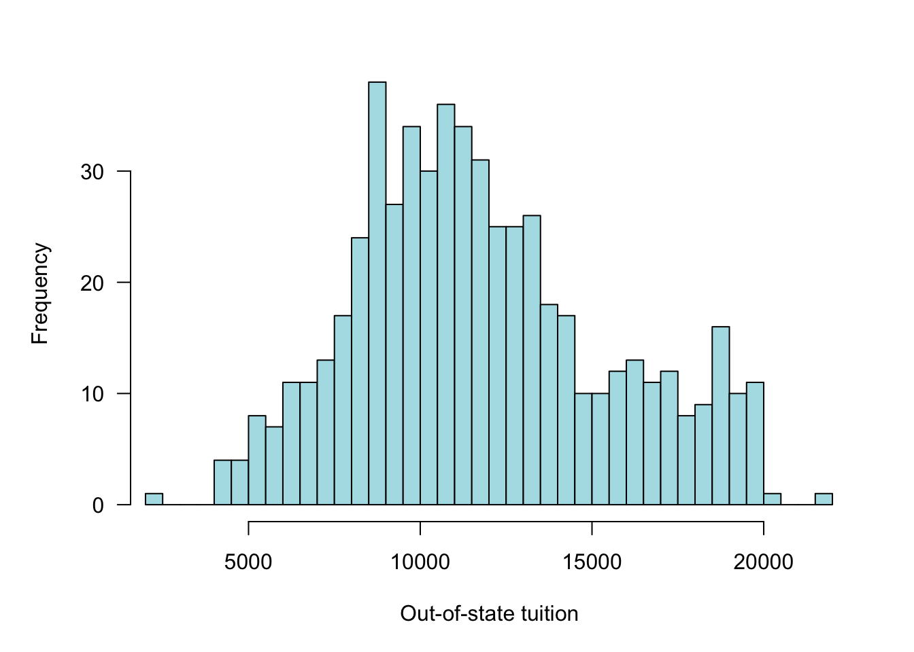
To compare frequency distributions between groups histograms can be plotted side by side or overlaid. When the histograms overlap a side-by-side display is preferred because bars from different groups can obscure it each other. Adding transparency to the bars helps but can still create confusing displays (Figure 33.4).
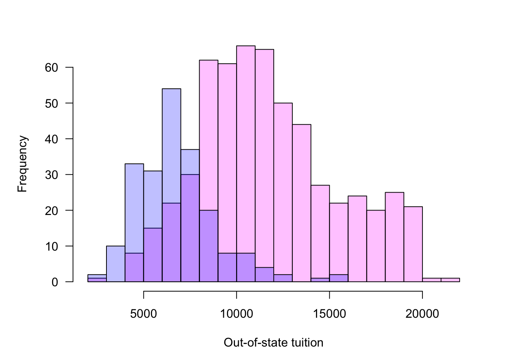
In the side-by-side display attention needs to be paid to the scale of the horizontal and vertical axes. Figure 33.5 forces the axes to be the same in both histograms to facilitate a direct comparison. Alternatively to forcing the vertical axes to the same frequency range you can express the frequencies in relative terms (Figure 33.6).
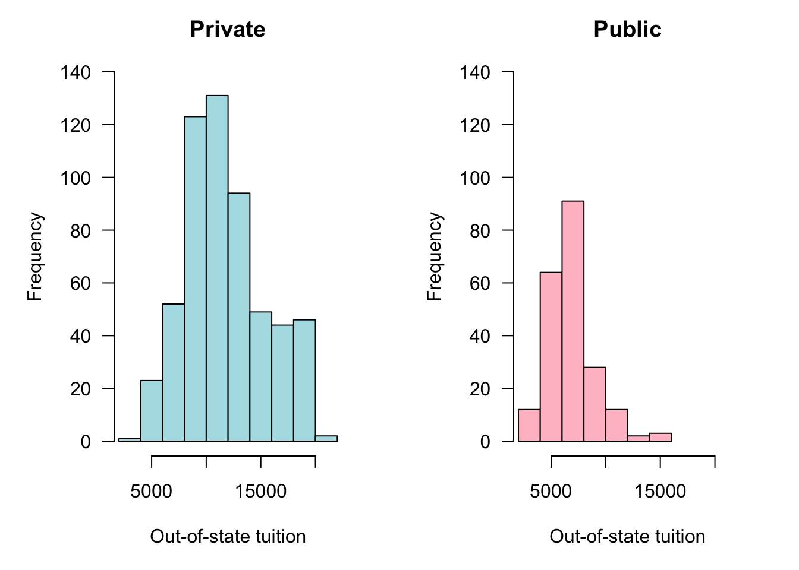
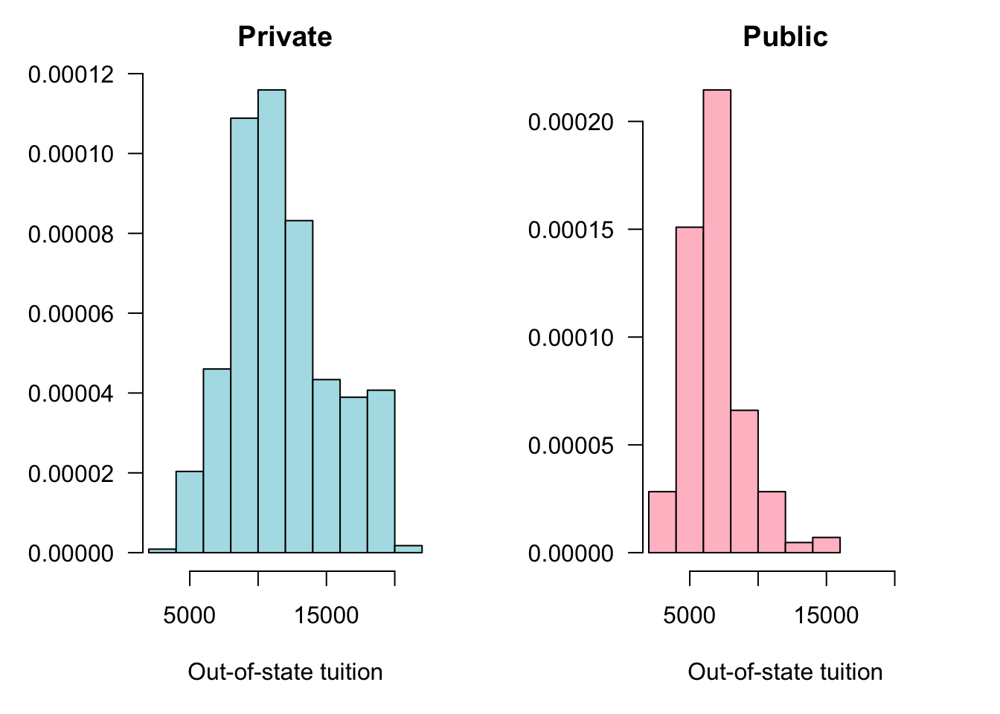
Boxplot
The boxplot, also called the box-and-whisker plot, is a simple visualization of a distribution that combines information about location, dispersion, and extreme values. The standard box plot (Figure 33.7) comprises
- a box that covers the inter-quartile range from \(Q_1\) to \(Q_3\).
- a line through the box at the location of the median (\(Q_2\)).
- Whiskers that extend from the edge of the box to the largest and smallest observations within \(1.5\times \text{IQR}\).
- Outliers that fall outside the whiskers.
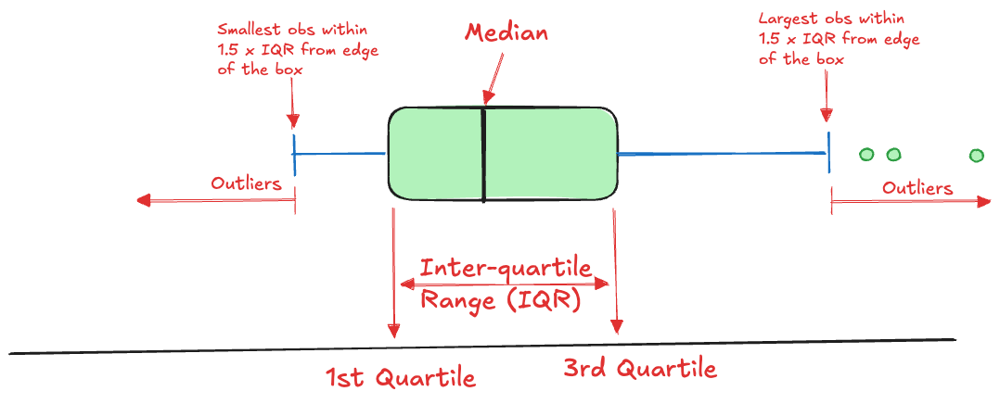
The idea of the boxplot is that the box covers the central 50% of the observation, the whiskers extend to the vast majority of the data. Data points that fall outside the whiskers are declared outliers.
Note, however, that outlying observations in boxplots does not necessarily indicate observations that are inconsistent with the data. A boxplot for a sample from a normal distribution will likely show some outliers by this definition (Figure 33.8). The probability to observe values outside of the whiskers for a \(G(\mu,\sigma^2)\) distribution is 0.00697. In a sample of \(n=1000\) you should expect to see 7 observations beyond the whiskers.
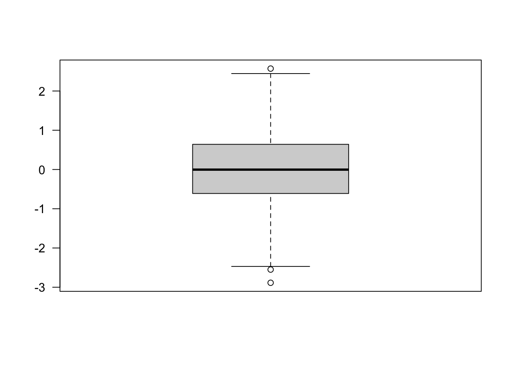
Boxplots are great visual devices to compare the distribution for different attributes (Figure 33.9) or to compare the same attribute across different groups (Figure 33.10).
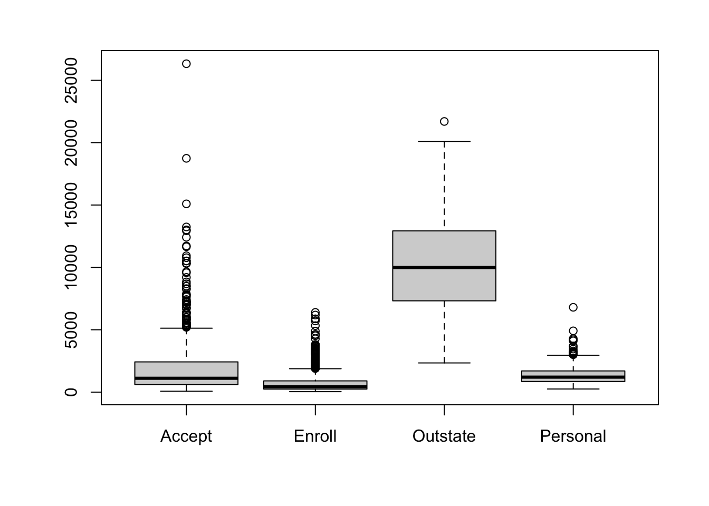
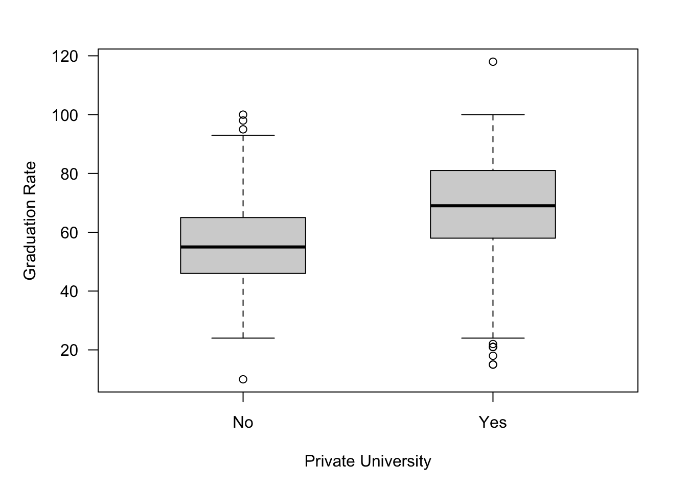
33.3 Sampling Distributions
Sampling distributions are probability distributions of statistics computed from random samples.
Chapter 32 discussed probability distributions in general. If one draws a random sample from, say, a \(G(\mu,\sigma^2)\) distribution, what are the distributional properties of statistics like \(\overline{Y}\), \(S^2\), and so on?
We know that \(\overline{Y}\) in a random sample from a distribution with mean \(\mu\) and variance \(\sigma^2\) has mean \(\text{E}[\overline{Y}] = \mu\) and variance \(\text{Var}[\overline{Y}] = \sigma^2/n\). This can be verified based on properties of expected values in iid samples. We do not need to mess with any density or mass functions.
\[ \begin{align*} \text{E}\left[\overline{Y}\right] &= \frac{1}{n}\text{E}\left[\sum_{i=1}^n Y_i\right] = \frac{1}{n} \sum_{i=1}^n \text{E}\left[Y_i\right] \\ &= \frac{1}{n} \sum_{i=1}^n \mu = \frac{n\mu}{n} = \mu \end{align*} \tag{33.3}\]
\[ \begin{align*} \text{Var}\left[\overline{Y} \right] &= \text{Var}\left[ \frac{1}{n}\sum_{i=1}^n Y_i \right]\\ &= \frac{1}{n^2} \text{Var} \left[ \sum_{i=1}^n Y_i \right]\\ &= \frac{1}{n^2} \sum_{i=1}^n \text{Var}\left[ Y_i \right]\\ &= \frac{1}{n^2} \sum_{i=1}^n \sigma^2 = \frac{n\sigma^2}{n^2} = \frac{\sigma^2}{n} \end{align*} \tag{33.4}\]
Equation 33.3 and Equation 33.4 apply to any population, as long as we draw a random sample. What else can we say about the distribution of \(\overline{Y}\)?
Central Limit Theorem
By the central limit theorem, introduced at the end of the previous chapter, we can say that the distribution of \[ \frac{\overline{Y} - \mu}{\sigma/\sqrt{n}} \] converges to a \(G(0,1)\) distribution as \(n\) grows to infinity. Another way of saying this is that the distribution of \(\overline{Y}\) converges to a \(G(\mu,\sigma^2/n)\) distribution.
This is a pretty amazing result. Regardless of the shape of the population you are sampling from, whether the attribute is continuous or discrete, if you draw a large enough sample, the sample mean will behave like a Gaussian random variable where the mean is the same as that of the population and the variance is \(n\)-times smaller than the population variance.
Example: Distribution of Sample Mean of Bernoullis
The distribution furthest from a Gaussian distribution in some sense is the Bernoulli(\(\pi\)) distribution. It is a discrete distribution with only two outcomes. Only for \(\pi=0.5\) is the Bernoulli distribution symmetric Figure 33.11 shows the mass function of a Bernoulli distribution with \(\pi=0.7\). How do you get from that to a continuous, symmetric Gaussian distribution?
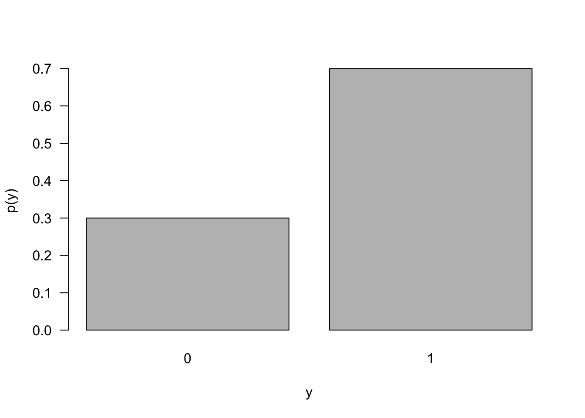
Let’s study the distribution of the sample mean if we draw random samples of sizes \(n_1 = 10\), \(n_2=100\), \(n_3 = 1000\), and \(n_4=10000\) from a Bernoulli(0.7). In order to get a good estimate of the sampling distribution of \(\overline{Y}\) the process needs to be repeated a sufficient number of times. We choose \(m=2500\) repetitions of the experiment to build up the distribution of \(\overline{Y}\).
Figure 33.12 shows the sampling distributions of \(\overline{Y}\) for the four sample sizes. For \(n=10\), for example, a random sample of size 10 was drawn from a Bernoulli(0.7) and its sample mean was calculated. This was repeated another 2,499 times and the figure displays the estimated probability density of the 2,500 \(\overline{y}\) values. A similar procedure for the other sample sizes leads to the other density estimates.
With \(n=10\), the distribution is far from Gaussian. The sample mean can take on only 10 possible values, \(0, 0.1, 0.2, \cdots, 1.0\). As \(n\) increases the number of possible values of \(\overline{Y}\) increases, the distribution becomes more continuous. It also becomes more symmetric and approaches the Gaussian distribution. For a sample of size \(n=1000\) the sample mean is very nearly Gaussian distributed and increasing the sample size to \(n=10,000\) does not appear to improve the quality of the Gaussian approximation much. However, it does increase the precision of \(\overline{Y}\) as an estimator; the variance of the sampling distribution for \(n=10,000\) is less than the variance of the sampling distribution for \(n=1,000\). We can calculate the variance of the sample mean in this case based on Equation 33.4:
\[ \text{Var}\left[\overline{Y}\right] = \frac{0.7 \times 0.3}{10000} = 0.000021 \]
{kind=link}
Sampling from a Gaussian
The central limit theorem specifies how the distribution of \(\overline{Y}\) evolves as more and more samples are drawn. If the distribution we sample from is itself Gaussian, we do not need a large-sample approximation to describe the distribution of \(\overline{Y}\).
In a random sample of size \(n\) from a \(G(\mu,\sigma^2)\) distribution, the distribution of \(\overline{Y}\) follows a \(G(\mu,\sigma^2/n)\) distribution. In other words, the distribution of \(\overline{Y}\) is known to be exactly Gaussian, regardless of the size of the sample. As long as we draw a random sample—that is, the random variables are iid.
In parallel to how the central limit theorem was stated above, we can say that if \(Y_1, \cdots, Y_n\) are iid \(G(\mu,\sigma^2)\), then \[ \frac{\overline{Y}-\mu}{\sigma/\sqrt{n}} \sim G(0,1) \tag{33.5}\]
The Gaussian distribution is just one of several important distributions we encounter when working with statistics computed from Gaussian samples, The \(t\), \(\chi^{2}\), and \(F\) distributions are other important sampling distributions. These distributions play an important role in inferential statistics, for example in computing confidence intervals or testing hypotheses about parameters. Names such as \(t\)-test, \(F\)-test, or chi-square test stem from the distribution of statistics used to carry out the procedure.
Chi-Square Distribution, \(\chi^2_\nu\)
Let \(Z_{1},\cdots,Z_{k}\) denote independent standard Gaussian random variables \(G(0,1)\). Then
\[ X = Z_{1}^{2} + Z_{2}^{2} + \cdots + Z_{k}^{2} \]
has p.d.f.
\[ f(x) = \frac{1}{2^{\frac{k}{2}}\Gamma\left( \frac{k}{2} \right)}x^{\frac{k}{2}}e^{- x/2},\ \ \ \ \ x \geq 0 \]
This is known as the Chi-square distribution with \(k\) degrees of freedom, abbreviated \(\chi_{k}^{2}\). The mean and variance of a \(\chi_{k}^{2}\) random variable are \(\text{E}\lbrack X\rbrack = k\) and \(\text{Var}\lbrack X\rbrack = 2k\).
The degrees of freedom can be thought of as the number of independent pieces of information that contribute to the \(\chi^{2}\) variable. Here, that is the number of independent \(G(0,1)\) variables. Since the \(\chi^{2}\) variable is the sum of their squared values, the density shifts more to the right as the degrees of freedom increase (Figure 33.13).
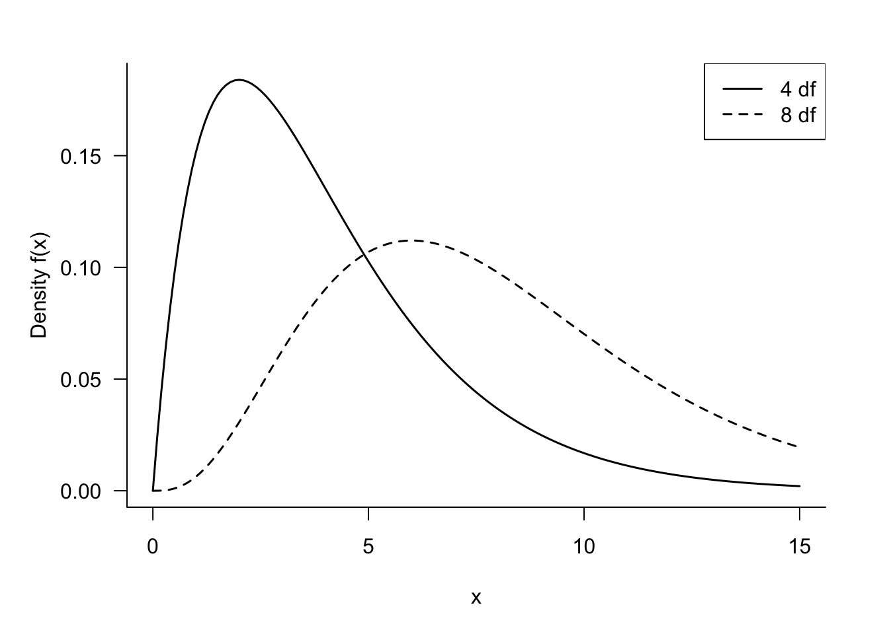
\(\chi^{2}\) distributions are important to capture the sample distributions of dispersion statistics. If \(Y_{1},\cdots,Y_{n}\) are a random sample from a \(G\left( \mu,\sigma^{2} \right)\) distribution, and the sample variance is
\[ S^2 = \frac{1}{n-1}\sum_{i=1}^n\left( Y_i - \overline{Y} \right)^2 \] then the random variable \[ \frac{(n-1)S^2}{\sigma^2} \] follows a \(\chi_{n-1}^2\) distribution. It follows that \(S^2\) is an unbiased estimator of \(\sigma^2\):
\[ \text{E}\left\lbrack \frac{(n-1)S^2}{\sigma^2} \right\rbrack = n - 1 \]
\[ \text{E}\left\lbrack S^{2} \right\rbrack = \sigma^2 \]
Students’ t Distribution, \(t_\nu\)
In the Gaussian case you can also show that \(\overline{Y}\) and \(S^2\) are independent random variables. This is important because of another distributional result: if \(Z \sim G(0,1)\) and \(U \sim \chi_\nu^2\), and \(Z\) and \(U\) are independent, then the ratio
\[ T = \frac{Z}{\sqrt{U/\nu}} \]
has a \(t\) distribution with \(\nu\) degrees of freedom. In honor of Student, the pseudonym used by William Gosset for publishing statistical research while working at Guinness Breweries, the \(t\) distribution is also known as Student’s \(t\) distribution or Student’s distribution for short.
As with the \(\chi_\nu^2\) distributions, the shape of the \(t_\nu\) distribution depends on the degrees of freedom \(\nu\). However, the \(t_\nu\) distributions are symmetric about zero and the degrees of freedom affect how heavy the tails are. As the degrees of freedom grow, the \(t\) density approaches that of the standard Gaussian distribution (Figure 33.14).
We can now combine the results about the sampling distributions of \(\overline{Y}\) and \(S^2\) to derive the distribution of
\[ \frac{\overline{Y} - \mu}{S/\sqrt{n}} \tag{33.6}\]
We know that \(\overline{Y} \sim G\left( \mu,\frac{\sigma^2}{n} \right)\) and that \(\frac{(n-1)S^2}{\sigma^2}\) follows a \(\chi_{n-1}^2\) distribution. Furthermore, \(\overline{Y}\) and \(S^2\) are independent. Taking ratios as required by the definition of a \(t\) random variable yields
\[ \frac{\frac{\overline{Y} - \mu}{\sigma/\sqrt{n}}}{\sqrt{S^2{/\sigma}^2}} = \frac{\overline{Y} - \mu}{S/\sqrt{n}} \sim t_{n - 1} \]
Compare Equation 33.5 to Equation 33.6. The difference is subtle, the dispersion statistic in the denominator. If the population variance \(\sigma^2\) is known, we use Equation 33.5 and the distribution is Gaussian with mean 0 and variance 1. If \(\sigma^2\) is unknown, we replace \(\sigma\) in Equation 33.5 with an estimator based on the sample, the sample standard deviation \(S\). The result is a \(t\) distribution with \(n-1\) degrees of freedom. As \(n\) increases, the \(t\) distribution approaches a \(G(0,1)\) distribution because the estimator \(S\) approaches a constant. For any given value \(n\), the \(t\) distribution will be heavier in the tails than a \(G(0,1)\) distribution because there is more uncertainty in the system when the random variable \(S\) is used as an estimator of the constant \(\sigma\) (Figure 33.14).
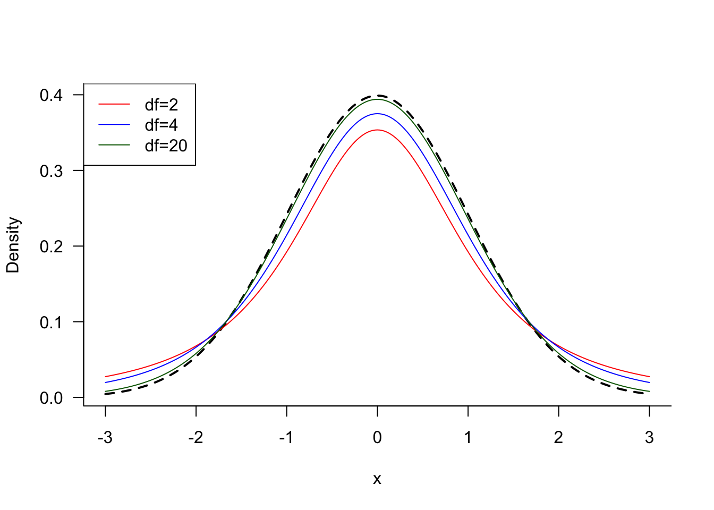
F Distribution, \(F_{\nu_1, \nu_2}\)
If \(\chi_1^2\) and \(\chi_2^2\) are independent chi-square random variables with \(\nu_1\) and \(\nu_2\) degrees of freedom, respectively, then the ratio
\[ F = \frac{\chi_1^2/v_1}{\chi_2^2/\nu_2} \]
follows an \(F\) distribution with \(\nu_1\) numerator and \(\nu_2\) denominator degrees of freedom (Figure 33.15). We denote this fact as \(F\sim F_{\nu_1,\nu_2}\). The mean and variance of the \(F\) distribution are
\[ \begin{align*} \text{E}\lbrack F\rbrack &= \frac{\nu_2}{\nu_{2} - 2} \\ \text{Var}\lbrack F\rbrack &= \frac{2\nu_2^2 (\nu_1 + \nu_2 + 2)}{\nu_1\left( \nu_2 - 2 \right)^2 (\nu_2 - 4)} \end{align*} \]
The mean exists only if \(\nu_{2} > 2\) and the variance exists only if \(\nu_{2} > 4\).
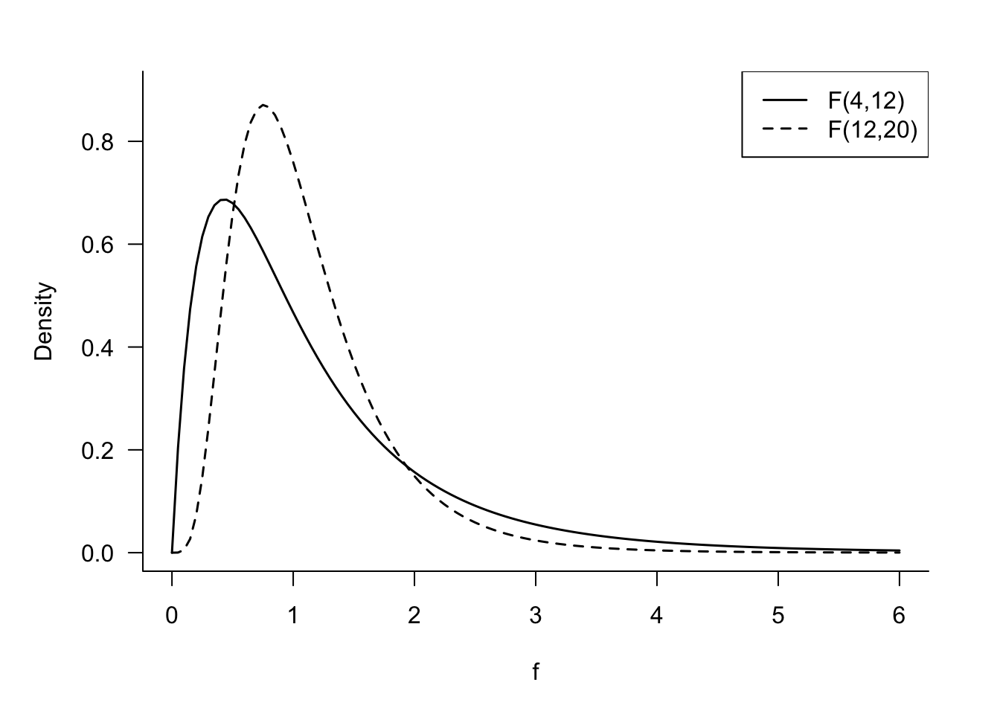
When sampling from a Gaussian distribution we established that \(\frac{(n-1)S^2}{\sigma^2}\) follows a \(\chi_{n-1}^{2}\) distribution. Suppose we have two samples, one of size \(n_1\) from a \(G(\mu_1,\sigma_1^2)\) distribution and one of size \(n_2\) from a \(G(\mu_2,\sigma_2^2)\) distribution. If the estimators of the sample variances in the two samples are denoted \(S_1^2\) and \(S_2^2\), respectively, then the ratio
\[ \frac{S_1^2/\sigma_1^2}{S_2^2/\sigma_2^2} \]
has an \(F_{n_1-1,n_2-1}\) distribution.
\(F\) distributions play an important role in the analysis of variance, where the numerator and denominator are ratios of mean squares.
Recall that the \(T\) random variable in the Gaussian case can be written as
\[ T = \frac{\frac{\overline{Y} - \mu}{\sigma/\sqrt{n}}}{\sqrt{S^2{/\sigma}^2}} \]
The numerator is a \(G(0,1)\) variable, so squaring it yields a \(\chi_1^2\) variable. The square of the denominator is a scaled \(\chi_{n-1}^2\) variable, \(S^2/\sigma^2\). Also, because \(\overline{Y}\) and \(S^2\) are independent, the squares of the numerator and denominator are independent. It thus follows that
\[ T^2 = \frac{\left( \overline{Y} - \mu \right)^2}{S^2/n}\]
follows an \(F_{1,n - 1}\) distribution.
This fact is used in software packages that report the result of an \(F\)-test instead of the result of a two-sided \(t\)-test. The two are equivalent and the \(p\)-values are the same.
33.4 Inferential Statistics
The process of statistical inference is to draw conclusions about the world based on data. The world is described in terms of populations and the probability distributions of attributes in the population. The data consists of observations drawn from those populations, random variables that follow the distribution laws that govern the populations. The goal is to infer properties of the populations based on the information captured in the data.
Some of the statistics computed in inference procedures are the same used to describe populations (distributions). For example, the sample mean describes the central tendency of a distribution, it is also used to compute confidence intervals for the mean in the population. Statistical inference adds a further dimension to describing things; it investigates the properties of the statistics such as bias and variance.
Point Estimation
A point estimate is a single number to estimate a parameter. The corresponding statistic is the point estimator. \(\overline{y} = 10.4\) in a random sample is the point estimate for the mean \(\mu\). \(\overline{Y} = \frac{1}{n}\sum_{i=1}^n Y_i\) is the point estimator; a rule that tells how to calculate the estimate.
Important properties of a point estimator are the bias and variance. The bias is a measure of its accuracy. An unbiased estimator is an accurate estimator. The variance is a measure of the uncertainty associated with the estimator; it is the reciprocal of the estimator’s precision. A highly variable estimator is not precise—and vice versa.
Bias and variance are long-run properties of the estimator, they are expected values.
Definition: Bias, Variance, and Mean Squared Error
The bias of an estimator is the expected value of the difference between the estimator and the parameter it is estimating. If \(\theta\) is the parameter of interest and \(h(\textbf{Y})\) is an estimator—a function of \(\textbf{Y}=[Y_1,\cdots,Y_n]^\prime\)—then \[ \text{Bias}\left[h(\textbf{Y});\theta\right] = \text{E}\left[h(\textbf{Y})-\theta\right] = \text{E}\left[h(\textbf{Y})\right]-\theta \] The variance of an estimator is the usual expected squared difference between the estimator and its mean: \[ \text{Var}[h(\textbf{Y})] = \text{E}\left[\left(h(\textbf{Y})-\text{E}[h(\textbf{Y})]\right)^2\right] \] The mean squared error of estimator \(h(\textbf{Y})\) for the parameter \(\theta\) is \[ \text{MSE}\left[h(\textbf{Y});\theta\right] = \text{E}\left[\left(h(\textbf{Y})-\theta\right)^2 \right] = \text{Var}[h(\textbf{Y})] + \text{Bias}\left[h(\textbf{Y});\theta\right]^2 \tag{33.7}\]
An estimator with \(\text{Bias}[h(\textbf{Y});\theta] = 0\) is said to be unbiased for \(\theta\). An unbiased estimator that has the smallest variance among all unbiased estimators is said to be a uniform minimum variance unbiased estimator (UMVUE).
Estimators with small bias and a sharply reduced variance—compared to the best unbiased estimator—can have a smaller mean squared error and can thus be preferred over an unbiased estimator.
Example: Estimating the Parameter of an Exponential Distribution
Suppose that \(Y\) has an exponential distribution with density \[ f(y) = \frac{1}{\theta} \, e^{-y/\theta}\qquad \text{for } y > 0 \] This is a re-parameterization of the density in Section 32.5.2 where \(\theta = 1/\)$. The mean and variance of \(Y\) are \(\text{E}[Y] = \theta\) and \(\text{Var}[Y] = \theta^2\). You draw a random sample of size \(n=3\). Consider the following estimators:
- \(\widehat{\theta}_1 = Y_1\)
- \(\widehat{\theta}_2 = \frac{Y1+Y2}{2}\)
- \(\widehat{\theta}_3 = \frac{Y1+2Y2}{3}\)
- \(\widehat{\theta}_4 = \overline{Y}\)
- \(\widehat{\theta}_5 = \min\{Y1,Y2,Y3\}\)
Which of these estimators are unbiased, which one has the smallest variance and mean squared error?
It is easy to establish that \(\widehat{\theta}_1\) through \(\widehat{\theta}_4\) are unbiased: \[ \begin{align*} \text{E}\left[\widehat{\theta}_1\right] &= \text{E}[Y_1] = \theta \\ \text{E}\left[\widehat{\theta}_2\right] &= \frac{1}{2}(\text{E}[Y_1] + \text{E}[Y_2])= \frac{2\theta}{2} = \theta \\ \text{E}\left[\widehat{\theta}_3\right] &= \frac{1}{3}(\text{E}[Y_1] + 2\text{E}[Y_2])= \frac{3\theta}{3} = \theta \\ \text{E}\left[\widehat{\theta}_4\right] &= \frac{1}{3}(\text{E}[Y_1] + \text{E}[Y_2] + \text{E}[Y_3])= \frac{3\theta}{3} = \theta \\ \end{align*} \]
The variances of these estimators are \[ \begin{align*} \text{Var}\left[\widehat{\theta}_1\right] &= \text{Var}[Y_1] = \theta^2 \\ \text{Var}\left[\widehat{\theta}_2\right] &= \frac{1}{4}(\text{Var}[Y_1] + \text{Var}[Y_2])= \frac{2}{4}\theta^2 = \frac{1}{2}\theta^2 \\ \text{Var}\left[\widehat{\theta}_3\right] &= \frac{1}{9}(\text{Var}[Y_1] + 4\text{Var}[Y_2])= \frac{5}{9}\theta^2 \\ \text{Var}\left[\widehat{\theta}_4\right] &= \frac{1}{3}\theta^2 \end{align*} \] The sample mean \(\widehat{\theta}_4\) is the most precise (smallest variance) estimator among the first four.
To find the properties of \(\widehat{\theta}_5 = \min\{Y_1,Y_2,Y_3\}\) a bit more work is required. This is called the first order statistic, the smallest value in the sample. It is denoted as \(Y_{(1)}\). The largest value, the \(n\)th order statistic, is denoted \(Y_{(n)}\). You can show that the first order statistic in a random sample of size \(n\) has density function \[ f_{(1)}(y) = n\left(1-F(y)\right)^{n-1}f(y) \] where \(f(y)\) and \(F(y)\) are the density and cumulative distribution function of \(Y\). For the case of a sample of size \(n\) from an exponential distribution we get \[ f_{(1)}(y) = n\left(1-F(y)\right)^{n-1}\,\frac{1}{\theta}e^{-y/\theta} \] Plugging in \(F(y) = 1 - e^{-y/\theta}\) we get \[ \begin{align*} f_{(1)}(y) &= n\left(e^{-y/\theta}\right)^{n-1}\,\frac{1}{\theta}e^{-y/\theta} \\ &= \frac{n}{\theta}e^{yn/\theta} \end{align*} \] The first order statistic from an exponential distribution with parameter \(\theta\) has an exponential distribution with parameter \(\theta/n\).
We can now evaluate the mean and variance of \(\widehat{\theta}_5\):
\[ \begin{align*} \text{E}\left[\widehat{\theta}_5\right] &= \frac{\theta}{3} \\ \text{Var}\left[\widehat{\theta}_5\right] &= \frac{\theta^2}{9} \end{align*} \] The bias of \(\widehat{\theta}_5\) for \(\theta\) is \[ \text{Bias}\left[\widehat{\theta}_5; \theta\right] = \frac{\theta}{3} - \theta = -\frac{2}{3}\theta \] and the mean squared error is \[ \begin{align*} \text{MSE}\left[\widehat{\theta}_5; \theta\right] &= \text{Var}\left[\widehat{\theta}_5\right] + \text{Bias}\left[\widehat{\theta}_5; \theta\right]^2 \\ &= \frac{1}{9}\theta^2 + \frac{4}{9}\theta^2 = \frac{5}{9}\theta^2 \end{align*} \]
In this case the biased estimator \(\widehat{\theta}_5\) has the same mean squared error as the unbiased estimator \(\widehat{\theta}_3\) but has a smaller mean squared error as the sample mean \(\widehat{\theta}_4\).
Interval Estimation
A confidence interval (CI) combines information on a point estimator with information about its precision to yield a range of values associated with a certain probability. For example, a 95% confidence for the mean of a population or a 99% confidence interval for the difference between two population means, e.g., comparing a placebo and a medical treatment.
The probability associated with the confidence interval is called the confidence level. The complement of the confidence level is frequently denoted \(\alpha\), a nod to the relationship between confidence intervals and significance levels in hypothesis testing. The confidence level is then expressed as \((1-\alpha)\times 100\%\).
Interpretation
Before going into the derivation of confidence intervals, a word about the proper interpretation of the interval. First, a confidence interval refers to a parameter or a function of parameters, not a statistic. Second, a confidence interval is associated with a probability (or percentage); typically a large value such as 90%, 95%, 99%. The result of estimating a two-sided confidence interval is a lower and an upper confidence bound, these are real numbers. For example, a 95% confidence interval for the population mean might be 5.3 to 12.0. A one-sided confidence interval has either an upper bound or a lower bound.
The correct interpretation of a confidence interval is in terms of repetition of the sampling process, as a long-run frequency. If we were to repeat the sampling process over and over, in 95% of those repetitions the 95% confidence interval would include (cover) the true parameter. In 5% of those repetitions the parameter falls outside (is not covered by) the confidence interval.
It is correct to interpret a 95% confidence interval as a random interval that contains the parameter with probability 0.95. The following interpretations of a confidence interval are not correct, although they are common:
The probability that the interval [5.3, 12.0] covers the parameter is 95%.
This interpretation is incorrect because it assigns the probability to the confidence interval calculated from the specific sample.It does not mean that 95% of the data fall within the interval.
The confidence interval makes a statement about a parameter, it does not describe the distribution of the data.
Example
Figure 33.16 displays the result of computing one hundred 95% confidence intervals for the mean of a distribution (population). Since the figure was obtained from a simulation, the value of the unknown mean is known; the mean is \(\mu = 4\).
Under conceptual repetition of the sampling we expect 95% of the confidence intervals to cover the mean. In this particular simulation, computing 100 confidence intervals, 94 of them cover the value \(\mu = 4\) (shown in black), and 6 of the intervals do not cover \(\mu=4\) (shown in red). This is close to the expected, long-run frequency of 95% of intervals covering the parameter.
{kind=link}
Constructing confidence intervals
Constructing a confidence interval relies on a statistic and its distribution. The sampling distributions in Section 33.3 play an important role. If we can start from a pivot statistic, constructing confidence interval estimators is pretty easy.
Definition: Pivot Statistic
Pivot statistic: a statistic that involves the parameter of question and whose distribution is known and is free of the parameter.
Suppose we want to construct a confidence interval for the mean of a \(G(\mu,\sigma^2)\) distribution based on the random sample \(Y_1,\cdots,Y_n\). From Section 33.3.4 we know that the statistic \[ T = \frac{\overline{Y}-\mu}{S/\sqrt{n}} \sim t_{n-1} \] has a \(t\) distribution with \(n-1\) degree of freedom. \(T\) is a proper pivot statistic for calculating a confidence interval for \(\mu\). It depends on \(\mu\) and its distribution does not involve \(\mu\); it does involve \(n\), however, but that is a known quantity (since we know the size of our sample).
The construction of a 95% confidence interval starts with a probability statement: \[ \Pr\left(t_{0.025,n-1}\leq T\leq t_{0.975,n-1}\right) = 0.95 \]
This simply states that the probability a \(T\) random variable with \(n-1\) degrees of freedom falls between the 2.5% and the 97.5% percentiles is 95%. There are other ways of carving out 95% of the area under the density. The following probability is also true, but it is customary to work with symmetric percentiles, in particular when the pivot distribution is symmetric.
\[ \Pr\left(t_{0.04,n-1}\leq T\leq t_{0.99,n-1}\right) = 0.95 \]
The next step is to substitute the formula for the statistic for \(T\) and to isolate the parameter of interest inside the probability statement.
\[\begin{align*} \Pr\left(t_{0.025,n-1}\leq T\leq t_{0.975,n-1}\right) &= 0.95 \\ \Pr\left(t_{0.025,n-1}\leq \frac{\overline{Y}-\mu}{S/\sqrt{n}}\leq t_{0.975,n-1}\right) &= 0.95\\ \Pr\left(t_{0.025,n-1}\frac{S}{\sqrt{n}}\leq \overline{Y}-\mu\leq t_{0.975,n-1}\frac{S}{\sqrt{n}}\right) &= 0.95\\ \Pr\left(\overline{Y}-t_{0.025,n-1}\frac{S}{\sqrt{n}}\leq \mu\leq \overline{Y}+t_{0.975,n-1}\frac{S}{\sqrt{n}}\right) &= 0.95\\ \end{align*}\]
The 95% confidence interval for the mean of a \(G(\mu,\sigma^2)\) distribution, based on a random sample \(Y_1,\cdots,Y_n\), is \[ \overline{Y} \pm t_{0.975,n-1}\times\frac{S}{\sqrt{n}} \] More generally, the \((1-\alpha)\times 100\)% confidence interval is \[ \overline{Y} \pm t_{\alpha/2,n-1}\times\frac{S}{\sqrt{n}} \]
Confidence intervals based on the CLT
The asymptotic distribution of a statistic can be used to construct confidence intervals when the sample size is sufficiently large. The Central Limit Theorem (CLT) plays an important role, it provides the distribution of the pivot statistic.
Suppose \(Y_1,\cdots, Y_n\) is a sample from a Bernoulli(\(\pi\)) distribution and \(n\) is large enough to invoke the CLT. The distribution of the sample mean \(\overline{Y} = 1/n \sum_{i=1}^n Y_i\) converges to a Gaussian distribution with mean \(\pi\) and variance \(\pi(1-\pi)/n\). The sample mean is an unbiased estimate of the event probability \(\pi\).
If \(z_\alpha\) denotes the \(\alpha\) quantile of the \(G(0,1)\) distribution we can state that asymptotically (as \(n\rightarrow\infty\)) $$ (z_{/2} z_{1-/2}) -
$$
The problem with this interval is that \(\pi\) appears in the numerator and the denominator of the pivot statistic. Proceeding as in the case of the \(t\)-interval leads to $$ ( - + ) -
$$
The structure of the interval for \(\pi\) is very similar to that of the \(t\)-interval, except it uses quantiles from the \(G(0,1)\) distribution instead of quantiles from the \(t_{n-1}\): \[ \overline{Y} \pm \frac{z_{\alpha/2}}{\sqrt{n}}\sqrt{\pi(1-\pi)} \] The term \(\sqrt{\pi(1-\pi)}\) is the standard deviation in the population. Since \(\pi\) is unknown, we replace it with an estimate, which happens to be \(\widehat{\pi} = \overline{y}\). The approximate \((1-\alpha)\times 100\%\) confidence interval for the event probability of a Bernoulli distribution is \[ \overline{Y} \pm \frac{z_{1-\alpha/2}}{\sqrt{n}}\sqrt{\widehat{\pi}(1-\widehat{\pi})} = \overline{Y} \pm \frac{z_{1-\alpha/2}}{\sqrt{n}}\sqrt{\overline{y}(1-\overline{y})} \]
Confidence interval for \(\sigma^2\)
To construct a confidence interval for the variance of a Gaussian distribution, based on a random sample, we use the pivot statistic \[ \frac{(n-1)S^2}{\sigma^2} \sim \chi^2_{n-1} \]
When the distribution of the pivot statistic is symmetric, as in the case of the \(t\)-interval or the \(z\)-interval for the population mean, it is reasonable to use symmetric quantiles in interval construction. \(chi\)-square distributions are not symmetric so there is some choice how to place \((1-\alpha)\) probability between upper and lower bounds. The convention is again to use quantiles with the same tail areas, but that does not necessarily yield the shortest confidence intervals.
If we accept the convention, the confidence interval for \(\sigma^2\) is \[ \Pr\left( \chi^2_{\alpha/2} \leq \frac{(n-1)S^2}{\sigma^2} \leq \chi^2_{1-\alpha/2}\right) = 1-\alpha \]
Rearranging terms and isolating \(\sigma^2\) in the center of the probability statement: \[ \Pr\left( \frac{(n-1)S^2}{\chi^2_{1-\alpha/2}} \leq \sigma^2 \leq \frac{(n-1)S^2}{\chi^2_{\alpha/2}}\right) = 1-\alpha \]
Confidence versus prediction interval
A confidence interval is an interval estimate for a parameter. The preceding sections established confidence intervals for \(\mu\), \(\pi\), and \(\sigma^2\).
Can we also produce an interval estimate if the target of the interval is a random variable rather than a constant?
The procedure of estimating a random variable is called prediction. Unfortunately, the terminology can be confusing; in the context of regression and classification models we use the term prediction whether the target is a parameter (predicting the mean response) or a random variable (predicting a future observation).
To illustrate the difference between inference about parameters and inference about random variables let’s express the sample observations in this form: \[ \begin{align*} Y_i &= \mu + \epsilon_i \qquad i=1,\cdots,n\\ \epsilon_i &\sim \textit{iid } (0,\sigma^2) \end{align*} \]
This simply states that \(Y_1,\cdots,Y_n\) are iid draws from a distribution with mean \(\text{E}[Y_i] = \mu\) and variance \(\text{Var}[Y_i] = \sigma^2\). The properties of the error terms \(\epsilon_i\) translate into stochastic properties of the \(Y_i\).
The obvious point estimator of \(\mu\) is \(\overline{Y}\) with mean \(\mu\) and variance \(\sigma^2/n\). What is the best predictor of the random variable \[ \mu + \epsilon_0 \]
where \(\epsilon_0\) is a new observation, not contained in the sample. A good predictor \(\widetilde{Y}\) minimizes the prediction error. If \(\widetilde{Y}\) is unbiased, this means minimizing the variance \[ \text{Var}[\widetilde{Y}-\mu-\epsilon_0] = \text{Var}[\widetilde{Y}-\epsilon_0] =\text{Var}[\widetilde{Y}]+\text{Var}[\epsilon_0] - 2\text{Cov}[\widetilde{Y},\epsilon_0] \] Since \(\epsilon_0\) is a new observation the covariance term \(\text{Cov}[\widetilde{Y},\epsilon_0]\) is zero. The prediction variance reduces to \(\text{Var}[\widetilde{Y}]+\sigma^2\). If we choose \(\widetilde{Y} = \overline{Y}\), this prediction variance is \[ \frac{\sigma^2}{n}+\sigma^2 \] If the errors \(\epsilon_i\) are Gaussian distributed, and $^2 is known, a \((1-\alpha)\times 100\%)\) prediction interval for \(\mu+\epsilon_0\) is \[ \overline{Y} \pm z_{\alpha/2}\sqrt{\frac{\sigma^2}{n}+\sigma^2} \]
This interval is wider than the corresponding confidence interval \[ \overline{Y} \pm z_{\alpha/2}\sqrt{\frac{\sigma^2}{n}} \] because of the extra term \(\sigma^2\) under the square root. It measures the irreducible error in the observations, the inherent variability in the population.
Prediction intervals for random variables are wider than confidence intervals for parameters because they accommodate variability beyond the constant parameters. This phenomenon comes into play in regression analysis. Predicting the mean function at some value \(x_0\) is more precise than predicting the value of a new, unobserved, observation at \(x_0\). Confidence intervals might be preferred over prediction intervals because the former are more narrow. The desired interpretation of predictions often calls for the wider prediction intervals, however.
33.5 Hypothesis Testing
The Procedure
A hypothesis is the formulation of a theory. We want to judge whether the theory holds water. What value is statistics in solving this problem? Statistics passes judgment on hypotheses by comparing the theory against what the data tell us. The yardstick is whether observing the data is likely or unlikely if the hypothesis (the theory) is true. If we observe something that practically should not have happened if a theory holds then either the observation is bad or the theory is wrong.
Ingredients
The ingredients of a statistical hypothesis test are
- A null hypothesis formulated in terms of one or more parameters.
- An alternative hypothesis that is the complement of the null hypothesis.
- A test statistic for which the sampling distribution under the null hypothesis can be derived.
- A decision rule that decides on the fate of the null hypothesis based on the (null) distribution and the realized value of the test statistic.
Example
An example will make the process tangible. Suppose we are wondering whether a drug cures more than 75% of the patients suffering from a disease. To answer the question we draw a random sample of patients and administer the drug. The theory we wish to test is that the drug is effective for more than 75% of patients. This theory is translated into a statement about a population parameter:
If \(\pi\) denotes the probability that a randomly selected patient is cured after taking the drug, then the null hypothesis of interest is \(H: \pi = 0.75\) and the alternative hypothesis is \(H_a: \pi > 0.75\).
This is an example of a one-sided alternative hypothesis. We are only interested whether the probability of cure exceeds 0.75, not if the drug has an efficacy significantly less than the 0.75 threshold. A two-sided alternative hypothesis would be \(H_a: \pi \neq 0.75\).
Based on the random sample of patients we can compute the sample proportion of cured patients, \(\widehat{\pi} = \overline{Y}\), where \(Y=1\) if a patient is cured and \(Y=0\) otherwise. The Central Limit Theorem tells us that if \(n\) is sufficiently large, the distribution of \(\widehat{\pi}\) converges to a \(G(\pi,\pi(1-\pi)/n)\) distribution. If the null hypothesis is true, the sampling distribution of \(\widehat{\pi}\) is a \(G(0.75,0.75\times 0.25/n)\).
Suppose the sample proportion is \(\widehat{\pi} = 0.9\). The data point toward the alternative hypothesis, the proportion is larger than 0.75. But \(\widehat{\pi}\) is a statistic with a distribution. Even if \(\pi = 0.75\) there is a chance to observe a result as extreme or more extreme than \(\widehat{\pi} = 0.9\). The question is how unlikely is that outcome if the null hypothesis is true.
If, for example, \(\Pr(\widehat{\pi} > 0.9 | \pi = 0.75) = 0.2\), that is, the probability is 0.2 to observe a sample proportion greater than 0.9 if the true event probability is 0.75, we cannot dismiss the null hypothesis as a plausible explanation for what we have observed. If, on the other hand, \(\Pr(\widehat{\pi} > 0.9 | \pi = 0.75) = 0.002\), then we should very surprised to observe a sample proportion of 0.9 or greater.
Decision rule
The decision rule of the statistical hypothesis test can be formulated in two equivalent ways. Both are based on the distribution of the test statistic under the null hypothesis.
Specify a probability level \(\alpha\) that is sufficiently small that should an event occur with this probability (or less) we discount the possibility that the event is consistent with the null hypothesis. We adopt the alternative hypothesis as a plausible explanation of the observed data instead. The level \(\alpha\) is called the significance level of the statistical test.
We compute the probability under the null hypothesis to observe a result as least as extreme as the one we obtained. This probability is called the \(p\)-value of the statistical test. If the \(p\)-value is less than the significance threshold \(\alpha\) the null hypothesis is rejected.
Computing a probability under the null hypothesis means that we consider the distribution of the test statistic assuming that the null hypothesis is true. Both decision approaches reject the null hypothesis as an explanation of the data if the observed event is highly unlikely under that distribution.
The difference in the two approaches is whether we decide on the null hypothesis based on comparing the value of the statistic to the rejection region under the null hypothesis or based on the \(p\)-value. The rejection region is the area under the null distribution that covers \(\alpha\) probability. If the alternative is one-sided, the rejection region is in one tail of the distribution. If the alternative is two-sided, the rejection region can fall in separate tails of the distribution. (Some tests are implicitly two-sided and have a single rejection region, for example, \(F\) tests).
If you reject a test at the significance level \(\alpha\) then you reject the test for all \(p\)-values less than \(\alpha\).
Figure 33.17 shows the \(p\)-value for a one-sided test where the test statistic takes on larger value if the null hypothesis is not true. The \(p\)-value corresponds to the shaded area, the probability of observing values of the test statistic a least as extreme as what we got. If the test would be two-sided and the test statistic would be inconsistent with \(H\) for small values as well, a second region on the left side of the distribution would have to be considered.
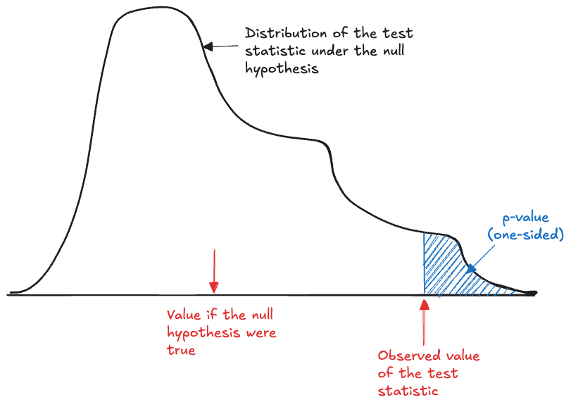
Figure 33.18 shows the decision procedure when we work with the significance level \(\alpha\). The shaded region in the tail of the null distribution is the rejection region for this one-sided test. The area under the density of the region is exactly \(\alpha\). If the test statistic falls into this region, the null hypothesis is rejected.
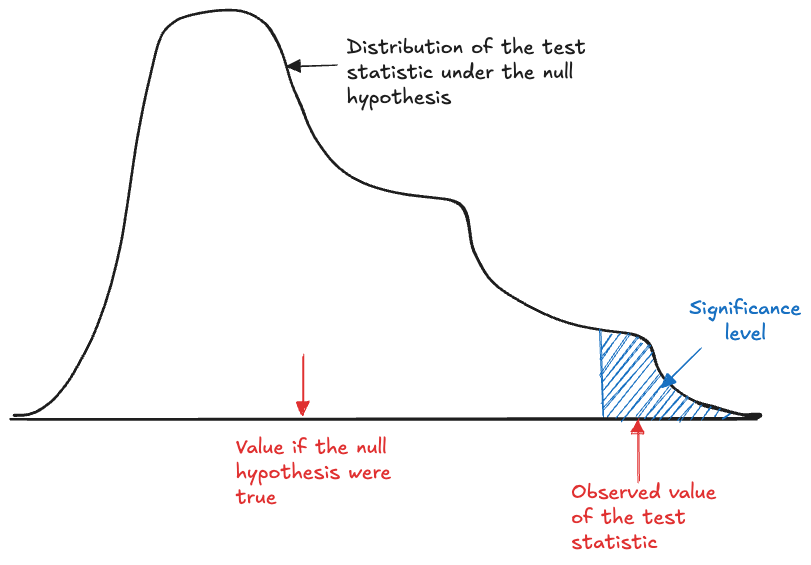
Returning to the previous example of testing \(H:\pi = 0.75\) against \(H_a:\pi > 0.75\), recall that by the CLT and under the null hypothesis \(\widehat{\pi} \sim G(0.75,0.75\times 0.25/n)\). The probability to observe a particular sample proportion (or a more extreme result) under the null hypothesis is a function of \(n\), since the variance of the sample statistic depends on \(n\).
If the null hypothesis is very wrong then it should be easy to reject \(H\) based on a small sample size; the test statistic will be far in the tail of the null distribution. If the null hypothesis is only a bit wrong, we can still reject \(H\) when \(n\) is sufficiently large, because we can control the variance of \(\widehat{\pi}\) through the sample size. In other words, we can affect the dispersion of the null distribution through \(n\) and create a situation where even tiny deviations from the value under the null hypothesis are significant.
These considerations lead to an important point: there is a difference between statistical significance and practical importance. Just because a result is statistically significant—that is, it is not consistent with a null hypothesis, does not imply that we care about the magnitude of the detected difference. Suppose you compare two fertilizer treatments and reject the hypothesis that they produce the same crop yield per acre (\(H:\mu_1 = \mu_2\)). The observed difference between the yields is 0.0025 bushels per acre. While statistically significant, it is not practically relevant and nobody would launch a marketing campaign to promote the fertilizer with the slightly higher yield. If, however, the statistical significant difference is 25 bushels/acre we feel much different about it.
Conclusions
The conclusion of a statistical test is whether the null hypothesis can be rejected or is failed to be rejected. We never know whether the alternative hypothesis is true. If we knew that ahead of time there would be no statistical problem.
The test is performed under the assumption that \(H\) is true and the best we can do is reject or not reject that hypothesis. Failing to reject the null hypothesis does not make it true. We only assumed that it was true for the purpose of calculating probabilities. You should avoid statements such as “We accept the null hypothesis”.
Derivation of a Statistical Test
The derivation of a statistical test is similar to the derivation of a confidence interval. It starts with a pivot statistic for which the distribution is known if the null hypothesis is true. Depending on whether the alternative hypothesis is one- or two-sided, we then calculate the probability to observe the value of the test statistic—or a more extreme result—under \(H\). If that \(p\)-value is sufficiently small, the null hypothesis is rejected.
Example: Testing the Mean of a \(G(\mu,\sigma^2)\)
You are drawing a random sample of size \(n=15\) from a \(G(\mu,\sigma^2)\) distribution to test \(H: \mu = \mu_0 = 4\) against \(H_a: \mu \neq 4\). The observed value of the sample mean is \(\overline{y} = 5.7\) and the sample standard deviation is \(s=3.1\).
To construct a test we use as the pivot statistic \[ T = \frac{\overline{Y}-\mu}{S/\sqrt{n}} \] If the null hypothesis is true, then \[ T_0 = \frac{\overline{Y}-\mu_0}{S/\sqrt{n}} \sim t_{n-1} \] The \(p\)-value of the test is \(2\Pr(T_0 > |t_0|)\). The absolute value and the doubling of the probability is done to compute probabilities in both tail areas of the null distribution.
The value of the test statistic under the null hypothesis is \[ t_0 = \frac{5.7-4}{3.1/\sqrt{15}}=2.123 \] The probability \(2\Pr(t_14 > 2.123) = 0.052\) is the \(p\)-value of the test.
If the significance level at which we declare that events are inconsistent (they should not have happened because they are too unlikely) is \(\alpha = 0.05\), then we would fail to reject the null hypothesis because \(p > 0.05\). If the signifiance level is \(\alpha = 0.1\), then we would reject \(H\).
Connection to Confidence Intervals
There is a straightforward connection between testing a hypothesis and estimating a confidence interval. Both are based on pivot statistics and quantiles of their distribution. If the observed value of the pivot—under the null hypothesis—is extreme, the null hypothesis is rejected. Similarly, the confidence interval specifies the values of the parameters that are likely supported by the data.
In other words, if you have a two-sided \((1-\alpha)\times 100\%\) confidence interval for parameter \(\theta\), then the hypothesis \(H:\theta = 0\) is rejected at the \(\alpha\) significance level for all values outside of the confidence bounds. Similarly for one-sided confidence limits and one-sided hypothesis test.
Starting with a null hypothesis \(H:\theta = \theta_0\), the hypothesis is rejected at the \(\alpha\) significance level if a corresponding \((1-\alpha)\times 100\%\) confidence interval covers \(\theta_0\).